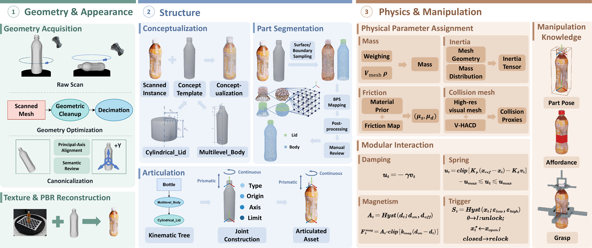
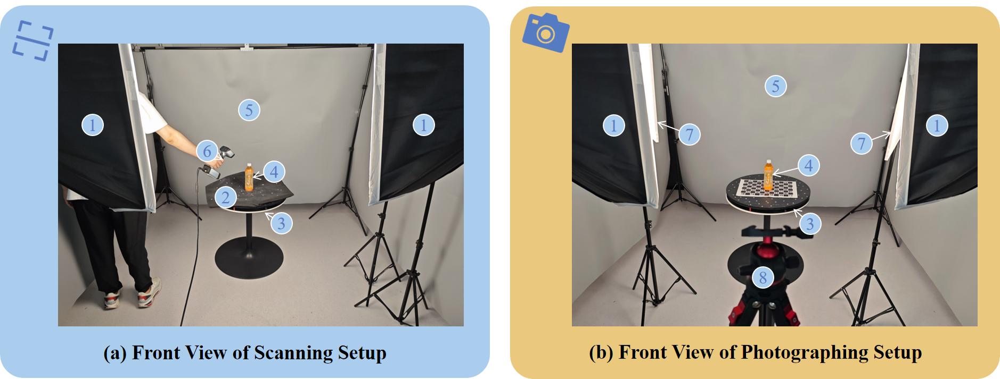
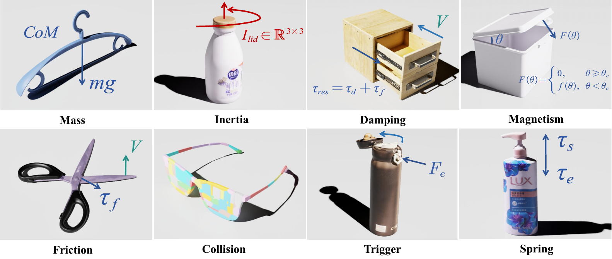

Robotic manipulation requires object assets that are not only visually realistic, but also sim-ready and reproducible as real-world instances. Existing resources typically provide either scan-derived real-world appearance or simulation metadata, but rarely both for large-scale purchasable objects. Thus, we introduce RoboPhyScan, a large-scale high-quality sim-ready real-world object dataset that contains 1,079 purchasable everyday object instances across 65 object types. Each asset aligns high-fidelity scanned geometry, reconstructed texture, precise articulation, rich physical properties, and manipulation annotations covering part pose, affordance, and grasp pose. Furthermore, we design an efficient real-to-sim assetization pipeline to reduce active human production time to approximately 60 minutes per asset on average. We also systematically evaluate our assets, including visual quality, sim-ready stability, and utility in downstream robotic applications. With RoboPhyScan, we provide a bridge from purchasable real objects to high-quality sim-ready assets, establishing a basis for reproducible sim-real manipulation research.


